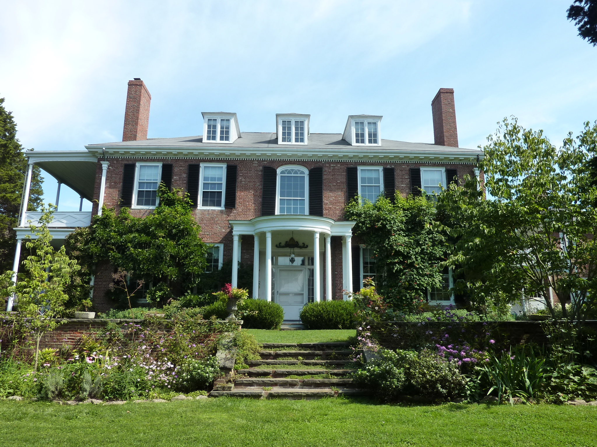
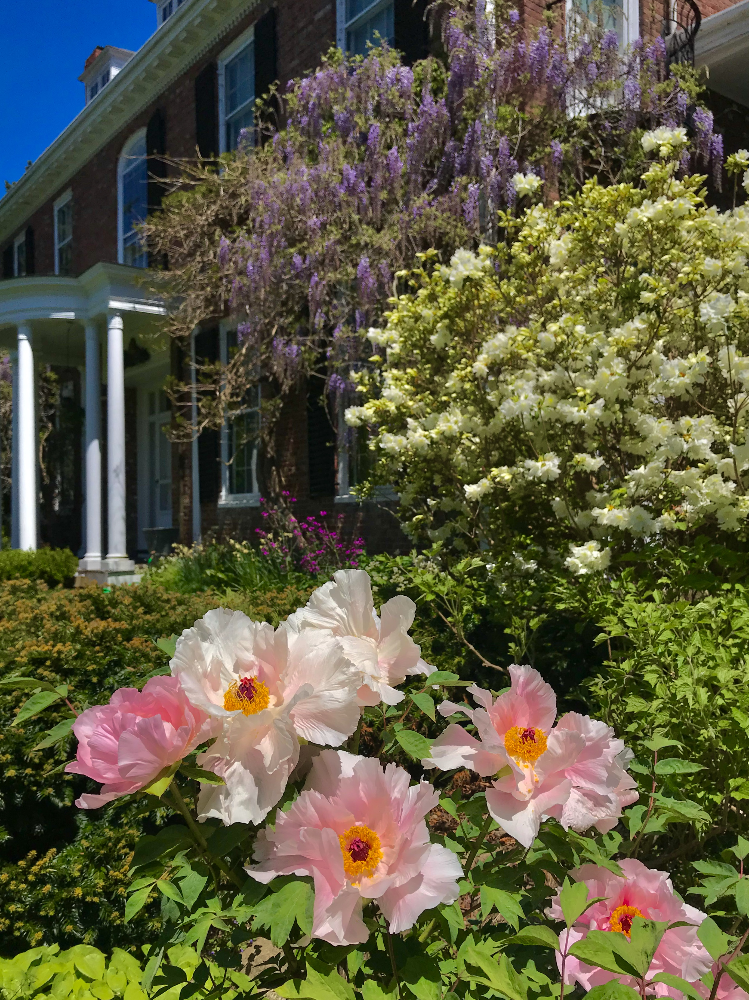

This former family retreat has been renowned for its gardens for
almost a century.
This former family retreat has been renowned for its gardens for
almost a century.
In 1916, this 114-acre hillside property attracted Atlantic Monthly
editor and publisher Ellery Sedgwick and his wife for its lovely
views of the rural North Shore. But Mabel Cabot Sedgwick, an
accomplished gardener and horticulturist, had more ambitious – and
aesthetic – ideas.
As the couple formulated plans for the elegant Federal-style home
that would become their summer retreat, Mabel Sedgwick also set
about designing gardens and landscape amenities that are renowned a
century later.
After her death in 1937, her vision was sustained and expanded by
the second Mrs. Sedgwick, the former Marjorie Russell, a rare plants
specialist, who added new and rare species of trees and shrubs to
the estate, some introduced by the Arnold Arboretum in Jamaica
Plain.

The gardens are laid out in a series of separate garden “rooms”
surrounding the handsome, Federal-style, brick house. The house
itself is a reproduction of the Issac Ball House in Charleston,
South Carolina in 1802.
Mr. Sedgwick purchased carvings and other architectural details from
the Ball House when it was abandoned, and shipped them to Boston by
barge.
Construction began at Long Hill in 1921, with bricks from an early
mill in Ipswich. Each “room” is distinct in its own way, accented by
ornaments and statuary.
Today, the gardens retain the “Garden for Living”–style with
integrated outdoor rooms, mature plantings that blend into the
surrounding woodlands, and a spirit of innovation in horticulture.
To design their indoor living space, the Sedgwicks hired the Boston
firm of Richardson, Barrott and Richardson.
The family wanted to bring the outdoors in, and they decorated the
rooms with lovely murals of garden scenes and flowers. Its interiors
also boast elegant woodwork and mantelpieces from the Isaac Ball
House in Charleston, South Carolina.
The gardens are flanked on all sides by more than 100 acres of
woodland as well as an apple orchard, meadow, children’s garden, and
agricultural fields, including a 2-acre organic vegetable farm run
by The Food Project as a Community Supported Agriculture (CSA)
project. - From Trustees' website
Hours:
Gardens are open year-round, daily, 8am to 5pm. Allow a minimum of 1½ hours. Peak bloom in May and June. Guided tours are offered in spring, summer, and fall and by appt.
Direction:
From Rt. 128 North to Exit 18, take Rt. 22 North 1 mi. Bear left at split in road and continue for 0.2 mi. on Essex Street to entrance on left (street number 572 is on the brick pillars). Parking area (50 cars) is up the driveway on left.